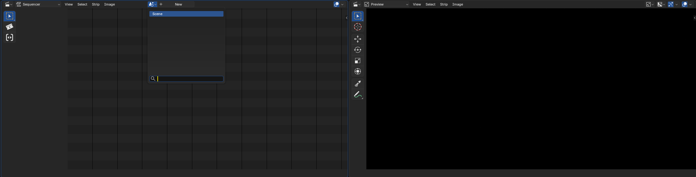

OpenBlender
An addon that brings generative workflows directly into Blender. Generate images, videos, 3D models, and receive AI assistance without leaving Blender.

Features Core
Ten modules that cover generation, remix, LoRA, HDRI, rigging, chat, and remote control.
IMG to IMG
WatchGenerate images with real-time viewport capture. Works in FreeView & CameraView.
- Manual "Run" or auto "Run on Change" modes
- Adjustable megapixels, steps, denoise
- Auto-numbered output in Image Editor
IMG to VID
WatchCreate videos from three keyframe images. Auto-add to Video Sequencer.
- First / Middle / Last keyframes
- Configurable frame count & resolution
- Re-click any keyframe to replace it
VID / TEXT / IMG to VID
WatchGenerate videos from a variety of inputs using LTX 2.3.
- Text prompt → video
- Image + prompt → video
- IC-LoRA depth viewport camera anim to video (With optional FirstFrame)
IMG to 3D
WatchConvert images into GLB models via Trellis2. Imported with textures.
- Import image → Start → 3D model
- Models downloaded via Blender Preferences → Download Models
Integrated chat via OpenRouter or local LM Studio.
- Claude, GPT-4, Llama 3, Mistral, Qwen
- Floating chat button in Blender UI
MCP Server
WatchHTTP/SSE server (OpenClaw) for remote Blender control.
- Scene, material, animation, render control
- Optional API key auth
Remix
WatchTransform any displayed image from inside the Image Editor. Uses the current image as IMG to IMG input.
- Image Editor side panel — no mode switching
- Auto-numbered output: Remix.001, Remix.002…
- Send result to IMG to 3D with one click
- Adjustable megapixels, steps, denoise & prompt
LoRA Support
WatchAdd LoRA models to your generation workflows.
- Open IMG to IMG / IMG to VID in ComfyUI WebUI
- Add your LoRA node(s) and save the API workflow
- Your LoRA stack is now applied automatically in Blender
TXT to HDRI
WatchGenerate 360° panoramic HDRI environment maps from text prompts using FLUX.2-Klein + HDRI LoRA.
- Full equirectangular 360° panoramic output
- Klein 9B HDRI LoRA — tuned for panoramic scenes
- Apply directly as World environment in Blender
TXT to RIG
WatchGenerate a humanoid rig with motion from a text prompt.
- Motion prompt → animated humanoid dummy
- Auto-imported into scene as a rigged GLB
- Auto First Person camera setup
- Triggerable from AI Chat
TXT to IMG
WatchGenerate images from text prompts. Result loads automatically into the Image Editor.
- Z-Image Turbo or FLUX.2-Klein workflows
- Adjustable steps, width & height
- Randomise Seed checkbox
- Triggerable from AI Chat
Key Capabilities
Designed to stay out of your way.
Non-Blocking
Background threads keep Blender responsive
Viewport Integration
FreeView & CameraView, correct aspect ratio
Smart Monitoring
Auto-detect changes, trigger generation
Custom Workflows
Load any ComfyUI JSON workflow
Image Management
Auto-numbered: Result, Result_001…
VSE Integration
Videos auto-add to Video Sequencer
Modular UI
Toggle panels to reduce clutter
SageAttention
Optional install for faster inference
Requirements
What you need before getting started.
🖥️ System
- ✓ Blender 5.0 or later (untested on prior)
- ✓ RTX 4090 recommended
- ✓ Sufficient VRAM for AI models + EEVEE
🔗 ComfyUI Features
- ✓ ComfyUI server running (local or remote)
- ✓ Required for IMG→IMG, IMG→VID, IMG→3D
- ✓ Must be started manually (WebUI not needed)
🌐 MCP Server (Optional)
- ✓ Network access for HTTP (default port: 9876)
- ✓ Optional: API key for authentication
💬 Chat (Optional)
- ✓ OpenRouter: API key + internet
- ✓ LM Studio: Local server running
Installation
Four steps to get everything running.
Install the Extension
- Download the OpenBlender extension package
- Blender →
Edit → Preferences → Extensions - Click "Install from Disk", select the
.zip - Enable the extension by checking the checkbox
Set Up ComfyUI (AIO Installer)
- Install Visual C++ Redistributable: aka.ms/vc14/vc_redist.x64.exe
- Install Windows PowerShell 7: PowerShell-7.5.4-win-x64.msi
- Update your NVIDIA drivers to the latest version
- Navigate to the addon directory:
C:\Users\YourName\AppData\...\Blender\5.0\extensions\user_default\openblender - Run
install_comfyui_aio.batand follow the on-screen instructions — this installs ComfyUI, performance packages (Triton, SageAttention, FlashAttention) - Nodes, dependencies, and AI models are set up from Blender Preferences (see Step 3 below)
Set Up in Blender Preferences
Open Edit → Preferences → Add-ons → OpenBlender and run these four actions in order:
- Verify ComfyUI Installation — set your ComfyUI path (e.g.
D:\ComfyUI_windows_portable) - Install Nodes — clones all required ComfyUI custom nodes.
- Install Dependencies — opens a console and installs Python packages into ComfyUI. Wait for "Installation complete!".
- Download Models — install the models you want; models download into the correct ComfyUI folders automatically.
- Configure — set your AI provider (OpenRouter API key or LM Studio URL)
Update
- Check the addon's Gumroad page for new versions and download updates
- Replace the content of
Blender\5.0\extensions\user_default\openblender - Open Blender →
Preferences → Add-ons → OpenBlender → Verify ComfyUI Path → Instal Nodes / Dependencies / Models if missingAfter a new update that brings new features
Usage
Step-by-step guides for each module.
MCP Server
WatchRemote Blender control via HTTP/SSE.
- Open sidebar panel (
Nkey → OpenBlender tab) - Click "Start Server"
- Connect MCP client to
http://localhost:9876/sse - Use API key if authentication is enabled
http://localhost:9876/sse
Server-Sent Events (SSE)
Integrated AI assistant inside Blender.
- Enable the Chat panel in addon Preferences
- Configure your LLM provider (OpenRouter or LM Studio)
- Click the floating chat button in the Blender UI
Vision / Keyframe Analysis
The AI chat supports vision-capable models (e.g. Kimi k2.5, GPT-4o, Claude) for analysing images directly inside Blender.
Video Prompt from Keyframes:
- Generate or assign your three keyframe images (First, Middle, Last) via the IMG to VID or Remix panel
- Open the floating chat and type:
generate a video prompt from keyframes images - The AI calls
get_vid_keyframe_images, receives the three images, analyses the visual sequence, and writes a detailed motion prompt describing scene content, transitions, mood, lighting, and optionally sound design
Requires a vision-capable model. The keyframe images are sent as base64 JPEG (max 512px) to stay within context limits.
Batch Generation
Request multiple images at once for keyframe sequences:
"Generate 3 continuous keyframes of Batman — first, middle, and end frames""Create 5 variations of a mountain landscape"
The AI generates coherent, continuous prompts showing temporal progression and calls the generation tool once per image. Each frame logically follows the previous with evolving poses, camera movement, and lighting. All prompts are automatically enhanced with cinematic detail.
Note: The AI triggers each image sequentially and will confirm after all requested images have been sent to ComfyUI.
Automatic Prompt Enhancement
All generation requests are automatically enhanced without you needing to write detailed prompts:
- Subject specifics: appearance, pose, action, costume, expression
- Camera work: angle, lens, motion, depth of field
- Lighting: key light quality, fill, rim, time of day, atmosphere
- Environment: location, weather, background elements
- Style: cinematic look, color grading, technical quality
Example — You say: "Batman" → AI generates: "Batman in tactical armored suit on rain-soaked Gotham rooftop, low-angle heroic shot with 35mm lens, dramatic rim lighting through storm clouds, volumetric fog, wet cape reflecting neon signs, cinematic color grading, 8k photorealistic"
IMG to IMG
WatchGenerate images from your viewport.
🎯 Manual Mode
- Set mode to "Run" in sidebar
- Adjust parameters → click "Generate"
⚡ On-Change Mode
- Set mode to "Run (on change)" → click "Start"
- Modify viewport — generation triggers when inputs are released
⚙️ Parameters
Describe desired output
Resolution: 0.1 – 1.0
Inference steps: 1 – 12
0.0 – 1.0 (Z-Image turbo only; Flux2 Klein = 1)
Output: Images appear in Image Editor as Result, Result_001, Result_002…
IMG to VID
WatchGenerate videos from three keyframe images.
- Click "First Frame" → start view
- Click "Middle Frame" → transition view
- Click "Last Frame" → end view
- Set Frame Count and Megapixels
- Click "Generate Video"
All three keyframes required. You can re-click any to replace. Video auto-adds to video sequencer if the scene is selected.

AI Video Prompt Generation
Once your three keyframes are set, ask the AI Chat to "generate a video prompt from keyframes images". The AI will visually analyse the First → Middle → Last sequence and write a cinematic motion prompt describing transitions, mood, lighting, and sound design context.
VID / TEXT / IMG to VID
WatchGenerate videos from text, image, or video inputs using LTX 2.3.
🖊️ Text to Video
- Open the OpenBlender sidebar panel (image editor) (
Nkey → OpenBlender tab) - Select the TXT to VID pannel
- Enter a text prompt describing the scene and motion
- Click "Generate"
🎞️ IC-LoRA Depth Control
The IC-LoRA depth model gives LTX 2.3 structural guidance for consistent motion across frames. It is downloaded via Blender Preferences → Download Models → LTX 2.3.
Describe scene, camera motion, mood
Inference steps
Output video length in frames
Width & height set by the blender render settings define the aspect ratio
IMG to 3D
WatchConvert 2D images to 3D GLB models via Trellis2.
- Import an image
- Click "Start"
- 3D model imports into Blender as GLB, with textures
Requires Trellis2 nodes in ComfyUI (installed via Blender Preferences → Install Nodes). Models are downloaded via Download Models → IMG to 3D.
Remix
WatchTransform images from inside the Image Editor side panel.
- Open any image in the Image Editor
- Press
N→ find the OpenBlender tab in the sidebar - Set your Prompt, Megapixels, Steps, and Denoise strength
- Click "Generate Remix"
- Result appears as
Remix.001,Remix.002… in the Image Editor
📤 Send to IMG to 3D
Click "Send to IMG to 3D" to push the currently displayed image to the IMG to 3D input.
🎬 Send to IMG to VID Frame
Use "Send to First / Middle / Last Frame" to assign the current Image Editor image directly to an IMG to VID keyframe slot.
🤖 MCP / AI Chat
Remix is also available via the MCP server and AI Chat using the trigger_remix tool. Agents can transform any displayed image remotely with a text prompt.
📸 Image Capture
Request the current state as an image:
"Send me the current image"→ Agent callscapture_image_editor"Show me the viewport"→ Agent callscapture_viewport
Both return base64 JPEG images that the agent can display in the chat.
Describe the remixed result
Resolution: 0.1 – 4.0
Inference steps: 1 – 20
0.0 – 1.0 (Z-Image Turbo only)
TXT to HDRI
WatchGenerate 360° equirectangular HDRI environment maps from text prompts using FLUX.2-Klein + Klein 9B HDRI LoRA.
- Set viewport shading to Material Preview or Rendered so the environment is visible
- In Properties → World, ensure a World data block exists — click "New" if the slot is empty
- Open the OpenBlender sidebar panel (
Nkey → OpenBlender tab) - Enter a Prompt describing the environment
- Set Megapixels and Steps
- Click "Generate HDRI"
- The generated panorama is automatically applied to the scene World as an environment texture
Describe the environment (sky, studio, nature…)
Resolution: 0.5 – 4.0+
Inference steps: 1 – 20
The required models are downloaded from Blender Preferences → Add-ons → OpenBlender → Download Models → TXT to HDRI.
TXT to RIG
WatchGenerate a humanoid dummy rig with motion from a text prompt using HY-Motion. The output is a generic animated skeleton — not a character with specific appearance or textures.
- In Blender, open the sidebar (N) → OpenBlender tab → TXT to RIG panel
- Enter a text prompt describing the motion (e.g. "walking forward", "jumping", "waving hand")
- Click "Generate" — HY-Motion runs in ComfyUI and produces an animated GLB
- The humanoid dummy rig is automatically imported into the scene
Tips
- Prompts should describe motion only — HY-Motion outputs a generic humanoid skeleton regardless of character description
- Use it as an animation base: retarget the motion onto your own character rig
- The AI Chat can trigger generation via the
trigger_txt_to_rigMCP tool - Models are downloaded from Blender Preferences
LoRA Support
WatchAdd LoRA models to your generation workflows.
- Open your IMG to IMG or IMG to VID workflow in ComfyUI WebUI
- Add your LoRA node(s) to the workflow graph
- Save the API workflow as
.json - Your LoRA stack is now applied automatically in Blender on every generation
Any ComfyUI-compatible LoRA works. Stack multiple LoRAs in a single workflow. Find models at CivitAI.
Configuration
Access via Edit → Preferences → Add-ons → OpenBlender. ComfyUI must be started manually.
🔌 MCP Server
🤖 LLM Provider
Tips & Troubleshooting
⚡ Performance
- Unload LM Studio models before running ComfyUI workflows to free VRAM
- VRAM issue in IMG to VID? In
ComfyUI/comfy/supported_models.py, changememory_usage_factor = 0.061to0.2
🏗️ Best Practices
- Disable unused panels in Preferences to reduce N-panel clutter
- Monitor ComfyUI consoles for progress
- Test workflows in ComfyUI first before using through Blender
🔧 Connection Issues
- Start ComfyUI manually before using generation features
- Verify Server URL matches running instance (default
127.0.0.1:8188) - Visit
http://127.0.0.1:8188in browser to confirm - Check firewall for port 8188
🔧 Other Issues
If Trellis2 doesn't load on ComfyUI, your system is probably blocking the symlink that is created for the environment,RUN the ComfyUI server as Administratorto allow the symlink to be created.- Missing models: Blender →
Preferences → Add-ons → OpenBlender → Download Models - Images not showing: Ensure Image Editor is visible
API Reference MCP
MCP Server endpoints and exposed Blender capabilities.
Version History
Debug
Enable console logging: Window → Toggle System Console — watch for [OpenBlender] and [PostProcess] log entries.